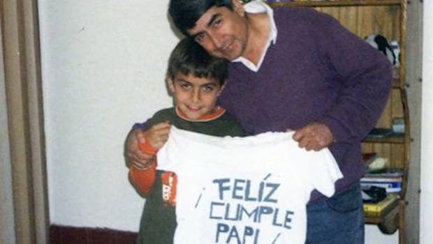
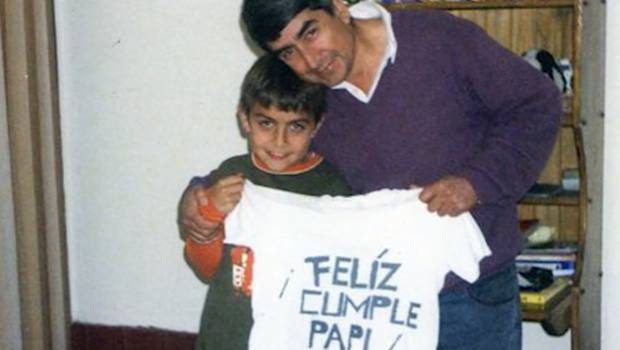

| Juventus | Palermo | Argentina | Roma |


 

biografia Paulo Exequiel Dybala nasce il 15 novembre del 1993 a Laguna Larga, in Argentina. Il nonno paterno è di origini polacche, fuggito in Sudamerica negli anni del nazismo. Paulo sin dalla più tenera età inizia a giocare a pallone, crescendo calcisticamente nell'Instituto. Quindi, a dieci anni prende parte a un provino con il Newell's Old Boys, che tuttavia non va a buon fine perché il padre vuole non farlo allontanare troppo da casa. Diventato orfano a quindici anni, Paulo Dybala va a vivere nella pensione della squadra.La carriera di calciatore professionista Nel 2011, ad appena diciotto anni, disputa la sua prima stagione da calciatore professionista in Primera B Nacional dopo avere sottoscritto un contratto per il minimo sindacale, pari a 4mila pesos all'anno, che corrispondono a 900 euro. Il 13 agosto debutta con la prima squadra, esordendo da titolare nella vittoria per due a zero contro l'Huracàn, mentre già la giornata seguente mette a segno la sua prima rete, nel pareggio per due a due contro l'Aldosivi. A ottobre, invece, realizza la sua prima tripletta da professionista nel quattro a zero contro l'Atlanta.a Dybala viene affibbiato il soprannome Joya. È un giornalista argentino a definirlo così, per sue doti tecniche che dimostra nel mondo del calcio, con il pallone tra i piedi. Joya significa gioiello. Il calciatore argentino viene notato da Gustavo Mascardi, impresario sudamericano in buoni rapporti con Sean Sogliano, direttore sportivo del Palermo, che decide di acquistare il cartellino di Dybala a un prezzo di dodici milioni di euro, incluse le commissioni e le tasse. Si tratta della spesa più elevata mai sostenuta dalla società siciliana per un giocatore. La stagione calcistica si conclude con un bilancio di diciassette gol in trentotto partite: Dybala è il primo giocatore a disputare trentotto partite di seguito in un campionato professionistico. È inoltre il primo a segnare due triplette.